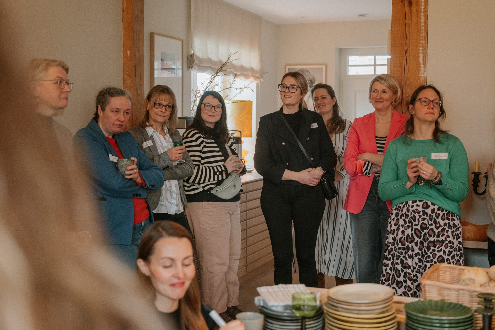
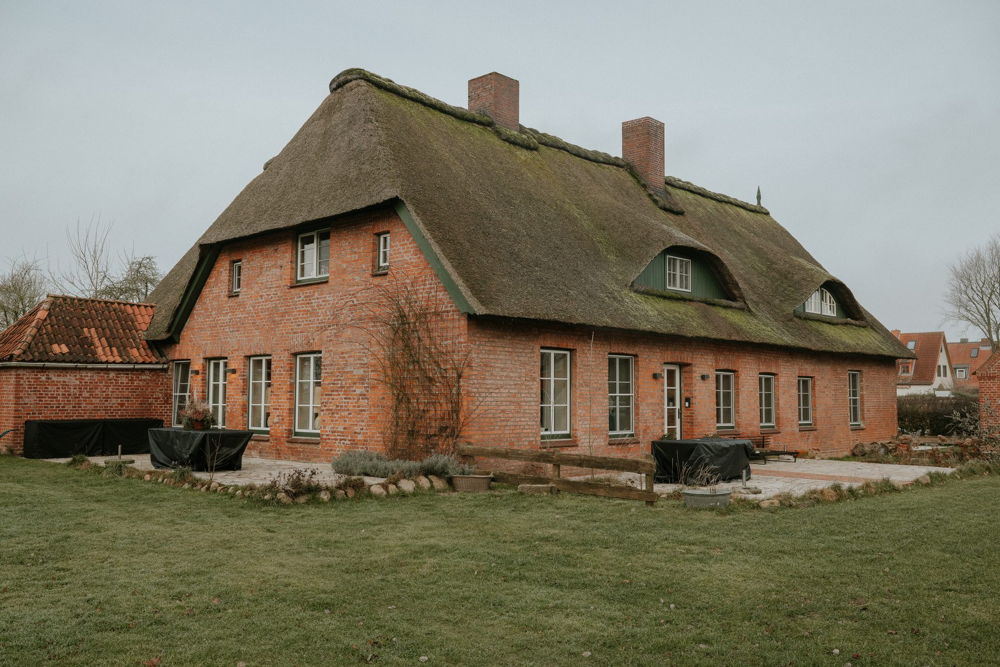

KI für Macherinnen
Vom ersten Satz zur echten Entlastung.

Moin.


Edgar Paul-Ghazaryan · Emre Erdogan
Drei Zurufe.
Was für ein Laden?
Wo steht er?
Wie heißt er?
Wir sehen uns am Ende wieder.
Zwei Männer erklären einem Raum
voller Unternehmerinnen,
wie Technik geht.
Wir wissen, wie das klingt.
Was heute nicht passiert.
Keine Fachwörter.
Keine Angst.
Kein Verkauf.

Heute Abend
Die Uhrzeit, zu der bei vielen von Ihnen
der eigentliche Arbeitstag anfängt.
Was um 21:47 Uhr noch liegt.
Nichts davon ist Ihre eigentliche Arbeit.
Sie sind nicht spät dran.
Solo-Selbstständige
nutzen KI
bauen aus
Nicht die Neugier ist das Risiko. Das Warten ist es.
ifo Institut und Jimdo, Juni 2026. Bitkom 2026.
Es gibt eine Lücke.
nutzen KI im Beruf.
Kein Unterschied
im Können.
Ein Unterschied
in der Haltung.
Initiative D21 und IAB, Digital Gender Gap, April 2026.
Unser einziger messbarer Vorteil dabei:
die Bereitschaft, Unsinn zu produzieren.
Und die gute Nachricht
ist eine sehr gute.
Frauen, die anfangen.
Fast doppelt so viele
wie Männer.
Initiative D21 und IAB, April 2026.
Es gibt genau einen Anfängerfehler.
Man tippt wie bei Google.
Drei Wörter. Hoffen.
Man redet wie mit einer
neuen Aushilfe.
Klug. Schnell.
Ahnungslos über Ihren Betrieb.
Einer Aushilfe sagen Sie auch nicht
„Mach mal Angebot" und gehen dann Kaffee holen.
Vier Fragen.
Wer bist du
für mich?
Was soll dabei
rauskommen?
Was musst du
dafür wissen?
Wie soll es
aussehen?
Frage drei macht den Unterschied.
Derselbe Auftrag, zweimal gestellt.
für eine Kundin.
Ergebnis: höflich, korrekt, austauschbar.
Schreib das Angebot für Frau Petersen.
Vier Räume, Altbau, Einzug im Oktober.
2.400 Euro. Freundlich und kurz.
Vierzig Sekunden mehr Aufwand.
Eine Stunde weniger Arbeit.

Teil zwei von drei
Machen.
Drei Aufgaben. Live.
Das Angebot,
das seit Dienstag wartet.
Getippt wird nicht. Gesprochen.
Ihr Handy kann das seit Jahren. Kostenlos.
Ab hier läuft die Uhr.
Du bist meine Büroleiterin.
Schreib das Angebot für Frau Petersen.
Vier Räume streichen, Altbau, hohe Decken,
Einzug am ersten Oktober. 2.400 Euro.
Freundlich, kurz, keine Fachwörter.
Rolle · Ergebnis · Wissen · Form. Alle vier Fragen stecken in diesem einen Satz.
Der zweite Satz ist der,
auf den es ankommt.
Naja, nicht ganz meins.
Schreib wie zu einer Kundin.
Letzter Absatz weg.
vorsichtig, klar,
sehr deutlich.
Meckern ist die Technik.
Der Beitrag, den Sie seit
drei Wochen aufschieben.
Ein Foto aus Ihrem Betrieb.
Kein perfektes. Ein echtes.
Wer hat gerade so ein Foto auf dem Handy?

Du machst unseren Instagram-Auftritt.
Hier ist ein Foto aus meinem Betrieb.
Schreib drei Bildunterschriften:
eine persönliche, eine sachliche,
eine mit Augenzwinkern.
Am Ende eine echte Frage.
Rolle · Ergebnis · Wissen · Form. Alle vier Fragen stecken in diesem einen Satz.
Die Mail, die Sie seit Montag
im Kopf haben.
Die Absage. Die Mahnung.
Die Antwort auf den Unhöflichen.
Welche Mail schiebt hier gerade jemand vor sich her?

Du bist meine ruhigste Kollegin.
Eine Stammkundin hat seit sieben Wochen
eine Rechnung offen.
Ich will sie nicht verlieren.
Schreib zwei Fassungen:
einmal freundlich mit Frist, einmal deutlich.
Rolle · Ergebnis · Wissen · Form. Alle vier Fragen stecken in diesem einen Satz.
Zehn Ideen. Ihr Betrieb.
Du kennst meinen Betrieb:
[ drei Worte von Ihnen ].
Gib mir zehn Ideen für Instagram.
Keine allgemeinen Tipps,
nur was zu genau diesem Betrieb passt.
Das Leichteste zuerst.
Handzeichen: Was würden Sie posten?

Bevor Sie damit loslegen
Drei Dinge, die Sie
einmal hören sollten.
Beschreiben Sie die Lage.
Nicht die Person.
Bergstraße 12 in Mölln
hat Rechnung 2026-0431
nicht bezahlt.
eine Rechnung offen
und meldet sich nicht.
Der Text wird derselbe.

Was seit dem 2. August gilt.
Sagen, dass die KI
geantwortet hat.
Chatfenster. Täuschend echte Bilder.
Der Rest kommt
erst 2027.
Betrifft die wenigsten hier.
Nebenbei: Sie erledigen hier gerade eine Pflicht.

Was bei Ihnen bleibt.
Der Preis.
Das Ja und das Nein.
Der letzte Blick.
Was kostet das?
Üben. Ohne Kundendaten.
Im Monat.
Mit Kundendaten.
Stunde
Rechnen Sie kurz nach.
Ihre erste Woche.
Herausfinden, wie es geht.
Die lästigste Aufgabe. Eine.
Dieselbe noch einmal. Und meckern.
Den Satz aufheben, der ging.
Ein Werkzeug. Eine Aufgabe.
Aus diesem Kreis kam
ein Achter, der zweimal
Olympiagold geholt hat.
Und aus Geesthacht kam die Diddl-Maus.
Es fehlen die Stunden.
Und darum ging es heute.


Heute Abend
Das Angebot ist raus. Der Beitrag steht.
Und die Mahnung hat jemand anders angefangen.
Und nebenbei ist das hier entstanden.
Ein erster Aufschlag. Ab hier wird gemeckert.
Das sind Sie.
Ein Foto von heute Morgen. Ein Satz.
Jetzt Sie.
Fragen Sie uns alles.
Besonders das Leise.

Alle Sätze.
Kein Konto nötig.
EDGE Digital
Fischstraße 16, 23552 Lübeck
info@edge-digital.ai
Fotos: Franzi Schädel Fotografie und Bildarchiv der WFL. Die Zeichnungen sind mit KI entstanden.